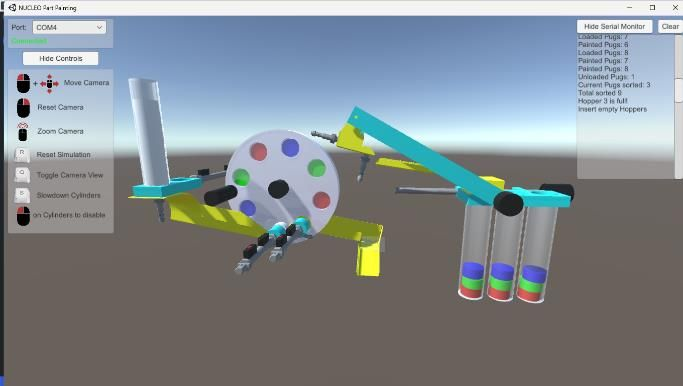
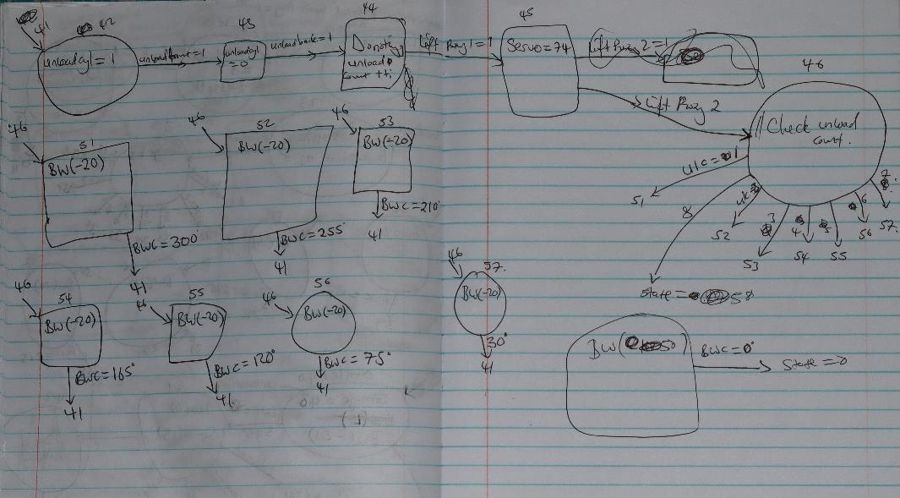
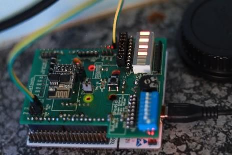
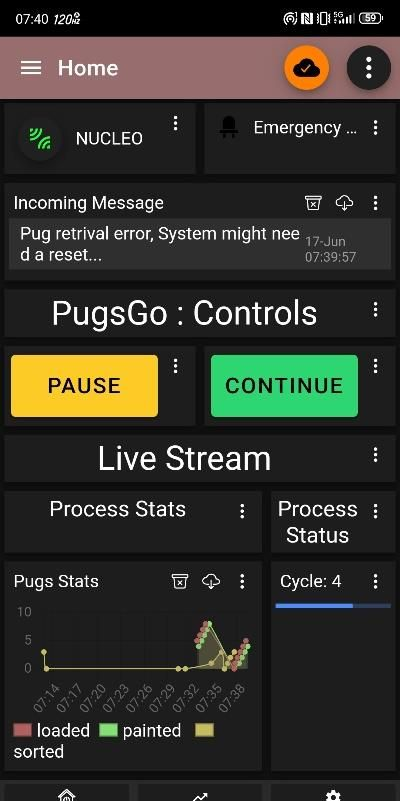

The brief
Build the controller for a part-painting line: raw aluminium parts arrive, get loaded onto a rotating buffer wheel, painted in a chosen colour sequence, checked by a colour sensor and sorted into hopper tubes. The line was a physics simulation driven over serial by a real STM32 board, so every timing and positioning problem was real.

Thinking in states
I sketched the process on paper first, then built it as a finite-state machine: each step waits for a sensor before moving on. Test and production modes, a pause that resumes exactly where it stopped, and an emergency stop that overrides everything are all states in the same machine.

Two threads, one controller
Wi-Fi is unreliable, and a factory should not stop because a phone lost signal. So the firmware runs on Mbed OS with two threads: one runs the process, the other handles Wi-Fi and MQTT through an ESP8266. If the network drops, the line keeps running.


When parts go missing
Simulated parts fall off, jam and get stuck, just like real ones. Timers catch cylinders that take too long to extend, parts that never arrive and parts lost after unloading. The system reports each fault to the dashboard and carries on where it safely can.
Some faults it could not handle, and the write-up says so. Because colours were assigned when parts were loaded, one lost part shifted the whole colour sequence. In hindsight, deciding the colour when each part reaches the sensor would make sorting far more robust.